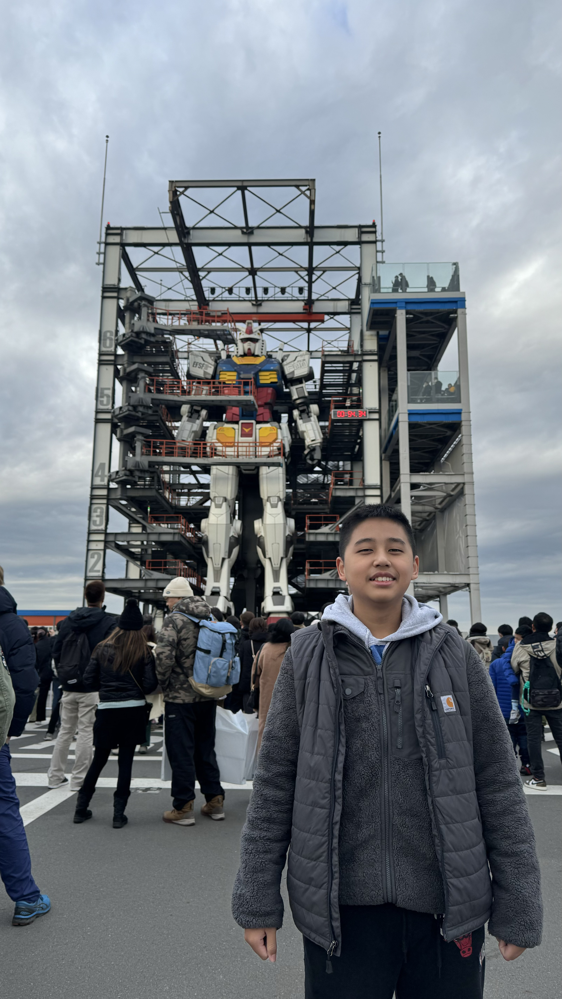

My name is Emmanuelle Alexander Tejakusuma, born on 22nd of April, 2011 in Jakarta, Indonesia. I had a family of 4, my mom, dad, brother and me, my family wasn't rich or either poor. In my early years, I studied at Springfield School, where I met many friends until grade 6. At this time, I was interested in sports like swimming and drawing, I also participated and won some competitions. Then, on June, 2023, I moved to Santa Laurensia Alam Sutera, where my life changed, I met new friends, new teachers, new subjects and a new environment. From grade 7, I started to play basketball more and got better. Eventually, I got to grade 8, where I started to do Calisthenics, which is strength training using bodyweight. Then, on March 2025, Edutrip happened, from that point on, my life changed again, I started to focus more on life and took exercising more seriously, as I started working out more and more, the reason this happened was because I was unhappy with my physique, so I started to workout in my room, in Edutrip and eventually, it turned into a habit. I started to track my calories and removed my bad habits. This was a major breaking point in my life as it also made me interested of becoming a professional Muay Thai fighter, because of this I started training everyday and I moved on from basketball.
My hobbies are working out, especially calisthenics at Stellar Powerhouse, by doing push-ups, pull-ups, dips, squats and many more. I also have a hobby of doing Muay Thai, which is a combat sport from Thailand, using the eight limbs. Doing Muay Thai, I usually take classes every week at VIDA Muay Thai, condition and train strength at home and sometimes run for 5km for cardio.